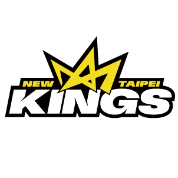

<!DOCTYPE html>
<html>
    <head>
        <title id="title">pleague</title>
        <link rel="stylesheet" type="text/css" href="1.css">
    </head>
    <body >
       
        
        
    </body>
    <script src="home.js"></script>
    <script>
        window.onload=open();
    </script>
</html>


<!DOCTYPE html>
<html>
<head>
<meta name="viewport" content="width=device-width, initial-scale=1">
<style>
* {box-sizing: border-box;}

.container {
  position: relative;
  width: 50%;
  max-width: 300px;
}

.image {
  display: block;
  width: 100%;
  height: auto;
}

.overlay {
  position: absolute; 
  bottom: 0; 
  background: rgb(0, 0, 0);
  background: rgba(0, 0, 0, 0.5); /* Black see-through */
  color: #f1f1f1; 
  width: 100%;
  transition: .5s ease;
  opacity:0;
  color: white;
  font-size: 20px;
  padding: 20px;
  text-align: center;
}

.container:hover .overlay {
  opacity: 1;
}
</style>
</head>
<body>

<h1>臺北富邦勇士</h1>
<div class="container">
<div style="text-align:center;">
 核心理念	<br>
  「富邦勇士隊」的故事以驍勇善戰的勇士核心價值 – 「勇氣」為起點，貫穿每一個賽季，並賦予隊伍前所未有的能力和熱情，去創造屬於富邦勇士傳奇性的故事。這是一條創新且不斷改寫歷史的路程，而勇氣將帶領隊員們超越每次的不可能，讓追求理想的熱情「勇不止息」。<br>
  
  品牌故事	<br>
  「2014年「富邦勇士隊」正式納入富邦金控旗下，富邦集團以強烈的企圖心和職業規格打造球隊形象，在SBL第12季重新出發，秉持「勇不止息」的核心精神，勇士隊不斷尋求突破與提升，終於在SBL第16季 (2018-2019) 奪下隊史首冠。
  
  富邦勇士的目標不僅贏得聯賽冠軍，更期盼提升台灣籃球整體環境，因此在2019年8月宣布加盟ASEAN Basketball League，簡稱 ABL，以立足台灣、放眼亞洲的經營理念投入亞洲職籃。並與臺北市政府攜手合作，冠名「臺北富邦勇士籃球隊」，同時選擇國內首屈一指的臺北和平籃球館為主場場館，致力推動主場經營。
  
  2020年富邦勇士參與 P. LEAGUE+ 的創立，以具體行動推動國內職籃發展，同步保留ABL會籍雙軌經營，持續跟隨母公司富邦金控「成為亞洲一流金融機構」的願景前進，為邁向亞洲指標性籃球隊而努力。<br>
  
  正式名稱	臺北富邦勇士籃球隊

  
  <div class="overlay"
 
  ></div>
</div>

</body>
</html>

<h1>新北國王籃球隊</h1>

<div class="right">

 核心理念	<br>
  新北國王籃球隊由王文祥董事長率領家族成員成立，承襲王永慶家族支持運動的精神，以結合體育、生活技能、永續發展、回饋社會公益為核心經營理念，盼協助培養身心靈健全的體育人才，結合社區發展，讓關懷充滿台灣每個角落。
  
  新北市擁有多樣的地形，超過400萬人口是最大的移居城市，豐富的人文特色集結在一座城市，是全台灣最有潛力的城市之一，新北國王希望透過籃球的力量，喚醒每位新北人內心的王者，一起榮耀城市，榮耀新北市！<br>
  
  品牌故事	<br>
  籃球，對我們來說不只是場上血脈噴張的灌籃與三分球，而是如何透過籃球，凝聚城市的力量，我們用籃球讓城市充滿激情，你們的歡呼聲，讓運動員變得更強，激發內心潛在的力量，讓每個人心靈都提升到另一個境界。
  
  新北國王希望透過籃球，啟發這座擁有豐富人文色彩的城市，喚醒每個人心中的王者，這些，不只是球場上，而是城市每個角落，新北市，你們所散發的光彩，遠超越皇冠的光輝。這道光，穿梭在每個街區，是你們賦予這座城市無上光榮，照亮整個國度。在這時刻，讓新北國王跟著你們一起榮耀新北市，<br>
  
  #CrowntheCity<br>
  
  正式名稱	新北國王籃球隊
  
  
  <div class="overlay"
 
  ></div>

  <h1>桃園領航猿</h1>
  
  <div style="text-align:center;">
   核心理念	<br>
  璞園建築團隊於2020年加入 P. LEAGUE+，並成立「桃園領航猿」籃球隊，發展屬地主義，與桃園在地結合。

  創意理念
  (1) 命名：為更進一步深化與桃園「航空城」的在地連結，桃園領航猿將以英文隊名「Taoyuan Pilots」征戰新聯盟，除了彰顯主場城市桃園作為臺灣國門的驕傲外，更希望能擔任引領臺灣籃球持續前進的領航員，邀請所有熱愛籃球的人們一起創造屬於台灣職業籃球的未來！<br>
  
  (2) 猿：「猿」群居的特性，象徵團隊至上的信念；「猿」旺盛的生命力，象徵源源不絕的鬥志；「猿」敏銳的觀察力，象徵洞燭機先的戰術。領航猿以自信的微笑、喜樂飛揚的領巾、制高點的視野看這一片美麗的福爾摩沙之島，用樂觀的心態迎接所有未知的挑戰。
  
  (3) 五芒星： 雖代表璞園建築在籃球界顯赫的戰績，期許領航猿能夠延續建築的態度精神在P. LEAGUE+迎接新的挑戰。而您，就是領航猿的最佳第六人，我們將全力以赴，蓄勢待發！
    
    <div class="overlay"
   
    ></div>
  
    <h1>新竹街口攻城獅</h1>
  
  <div style="text-align:center;">
   核心理念	<br>
  Hsinchu Jko Lioneers 新竹街口攻城獅籃球隊希望藉由在地球隊的成軍，成為連結新竹的正向力量，樹立起「用運動建立文化，用科技揚名國際」的球隊精神。

品牌故事	
沒有什麼科技發展，是這座城市沒有貢獻過的。
沒有什麼事情，是這座城市沒有經歷過的。
沒有什麼風景，是這座城市沒有的。

2020 年「 Hsinchu Jko Lioneers 新竹街口攻城獅職業籃球隊」由一群擁有竹科背景的企業家聯合成立，因彼此心中都有著對運動的熱愛齊聚一堂，希望藉由在地職業籃球隊的成軍，成為連結新竹的正向力量，投身職籃聯盟「P. LEAGUE+」。

「新竹攻城獅」中文隊名靈感正是來自《宅男打籃球》的「竹北攻城獅」，我們血液裡不僅繼承竹科強韌的 DNA，也希望用「竹北攻城獅」隊長－老莫的精神提醒自己：「不論輸贏，全力打好每一球。」期望繼承新竹人、竹科的強韌意志，成為連結新竹的正向力量。
    <div class="overlay"
   
    ></div>


    <h1>福爾摩沙台新夢想家</h1>
  
  <div style="text-align:center;">
   核心理念	<br>
  每個人都是夢想家，各自擁有不同的籃球夢，而在築夢的路上彼此陪伴、相互鼓勵，堅定地朝著夢想前進，期盼臺灣的籃球環境能越來越好。我們相信「一個人作夢，夢想只是空想；一群人作夢，夢想就會成真。」

品牌故事	
我們每個人都有夢！籃球，帶給了我們實現夢的機會！ 　

夢想家們因心中同樣有著對籃球的熱愛與執著，即使跨足在不同領域，仍始終與籃球有所連動。2017年夏天，秉持著共同的理念組成「Formosa Dreamers 寶島夢想家籃球隊」，代表臺灣參加東南亞職業籃球聯賽(ABL)，期許在團隊各司其職的努力下，為臺灣籃壇劃出一道全新的可能。2020年夏天，寶島夢想家不忘初衷，選擇加入新職業籃球聯盟P. LEAGUE+，並更名為「福爾摩沙台新夢想家」，期望能與聯盟及其他隊伍並肩為臺灣籃球奮鬥，一步一腳印，共同築出屬於臺灣的籃球夢。
    <div class="overlay"
   


    ></div>
    <h1>高雄鋼鐵人</h1>
  
    <div style="text-align:center;">
     核心理念	<br>
    我們有著鋼鐵人般的意志和決心，
    就算對手再強，從不懼戰、不怕失敗，
    就算戰得傷痕累累，一樣拚盡全力、追尋勝利！
    
    作為代表高雄的隊伍，鋼鐵人會奮戰到底，
    讓高雄成為一個值得所有球迷驕傲的城市！
    <br>
    品牌故事	
    高雄鋼鐵人「Kaohsiung Steelers」是成立於2021年的臺灣職業籃球隊，以高雄市作為球隊所在地、鳳山體育館作為球隊主場館，正式參與P. LEAGUE+ 聯盟賽事。
    
    高雄鋼鐵人的命名取自高雄市以鋼鐵業等重化工業為發展重點。球團秉持鋼鐵般的堅持之心，打造鋼鐵意志的籃球風格，於港都向下紮根、服務廣大高雄及南臺灣的籃球迷，帶來最精彩的職業籃球盛事。
      <div class="overlay"
     
      ></div>
</div>

</body>
</html>
